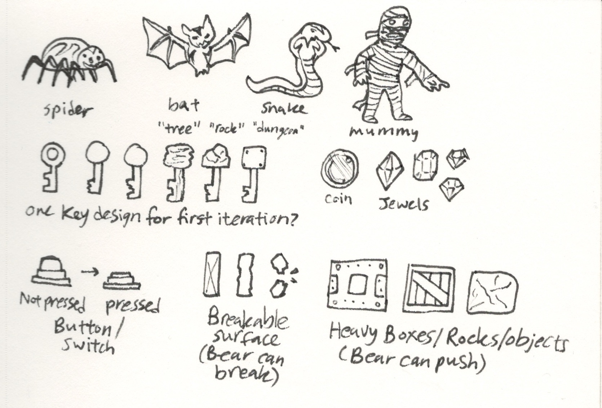
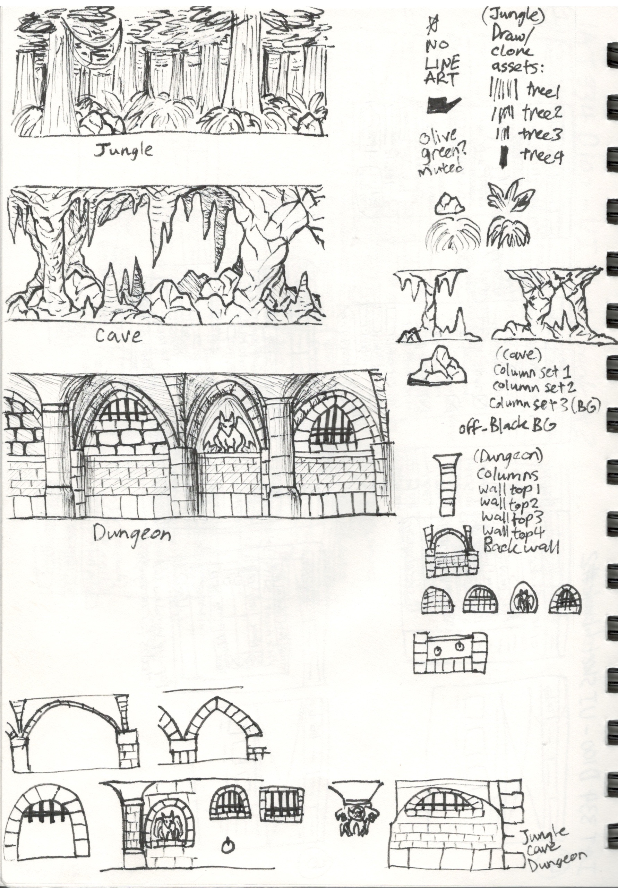
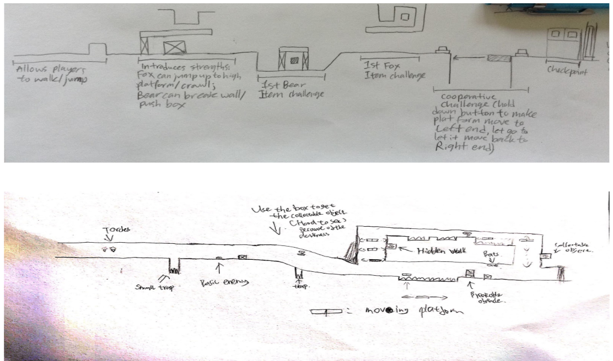
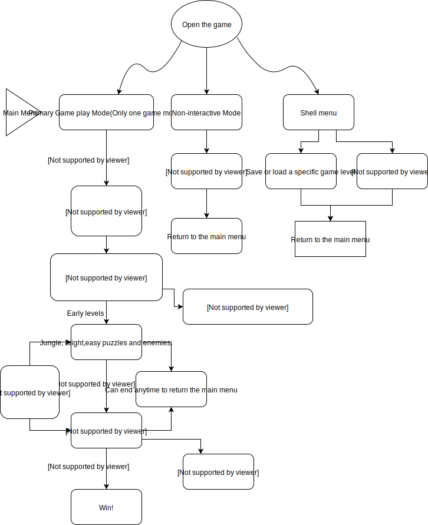

Figure 1 - The Dungeon Explorers
Figure 2 - Sketches
Figure 3 - More Sketches
Figure 4 - Level Design
Figure 5 - Bubble Diagram
During a programming course called IAT 410 - Advanced Game Design, students were assigned to design and develop one electronic game through the whole semester.
Our game is called Dungeon Explorers.It's a 2D sidescrolling game that focuses on the collaboration between our two characters - Boma the Bear and Mira the Fox. It is either playable by two players or one person who can switch between the two characters. Mira and Boma find a treasure map and set off to a jungle to find this treasure.
Our team initially had four team members, and we wanted to create a game that requires some teamwork. However, one of our team members left, then we had to make the game with only three members, and their names are Alex, Rachel and me. It's much harder compared with four members, so each of us need to work on more things, but we still managed to finish our game on time.
Since our team only had three members, then it's essential for us to split the work so we can work on this project synchronously. We had one coder and one visual artist, so my job is mainly focused on level design. In the beginning, I thought the level design is quite easy, but after I tried to come up with some levels that I can show to my team, I realized how hard it could be. For example, a level cannot have only one obstacle or tons of obstacles because then the game will be either super easy or super hard, and none of them are good. To make a general good game,the difficulty of the game has to become harder and harder gradually. Initially, I designed a level like this (Figure 4), but from the playtesting sessions, it's not working that well. Then I started to analyze the feedbacks and designed a new level, which worked pretty well, and that level went into our final game. Also I analyzed the experience within that game to find which part is fun and which part isn't, so I created several bubble diagram to help me to find issues.(Figure 5)
As for designing a level, the first step would be drawing sketches. It's easier and faster than doing it with the computer. These were some of my sketches during that time, even though my drawings were not that good, but with annotations beside those obstacles, buttons or collectable items, people could still understand my idea and give me feedback. With those feedbacks, then I could create the level on the computer so the coder can know every detail of that level and be able to build it.
From this course, I learned the way to work separately in a group, and every individual could contribute at the same time, which could be useful in my future career.